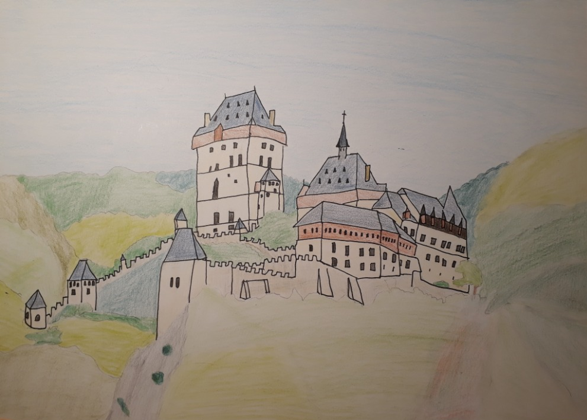

Karlštejn
Information about Karlštejn
Karlštejn Castle was founded in 1348 by the Charles IV, King of Bohemia and Holy Roman Emperor as his private residence and a place of safekeeping royal treasures, especially his collections of holy relics and the Imperial Crown Jewels. In 1355 Charles IV stayed here for the first time, overseeing the construction and decoration work, especially in chapels. The construction was completed in 1365 when the Chapel of the Holy Cross in the Great Tower was consecrated. The Chapel of the Holy Cross was the place of safekeeping the imperial crown jewels until 1420 when the Hussite wars (religious civil war) began, and they had not ever returned to Karlštejn Castle. After the wars in 1436, the Bohemian crown jewels were taken to the Chapel of the Holy Cross where they remained till 1619. The castle was a representative residence of Charles IV and his son Wenceslas IV only, i.e. till 1419. As a fortress, Karlštejn Castle protected the crown jewels, holy relics, and royal archives till the 17th century. Over the centuries the castle has always been in hands of the king or a state institution, never in private hands. Nowadays it is owned by the state. After 1480 the castle was rebuilt in the late Gothic style, in the last quarter of the 16th century in the Renaissance style. During the last reconstruction that took place at the end of the 19th century (by architect Josef Mocker) in the spirit of purism, the castle gained its present appearance. Very impressive is the preserved original stair-arrangement of individual castle buildings. The lower section with a small courtyard by the Well Tower and the Burgrave´s House continue through the majestic five-storey Imperial Palace and the Marian Tower. At the highest point, the construction of the castle culminates in a monumental, 60-meter-high Great Tower and its massive fortifications. Castle Attractions A unique original 14th-century wall decoration, a set of 129 paintings created by Master Theodoric in the Chapel of the Holy Cross (the largest in the world), the largest portrait gallery of kings of Bohemia in the Czech Republic, a replica of the royal Crown of Bohemia, a unique castle well. The castle is also famous as a set to a comedy play Night at Karlštejn Castle by Czech poet Jaroslav Vrchlický. more information
Address
Karlštejn state castle
Karlštejn 172
267 18 Karlštejn
To do before visit
- Always check the official website if it is open for your date of visit.
- Book your ticket online – They may be booked out weeks in advanced.
- Make sure you choose the right tour for you and your group – some places do special tour (tour in costumes,tours for kids, etc).
Want your journey to be perfect for you? Are interested in other Czech's sight or you found a mistake on our website? Contact us.
Contact form